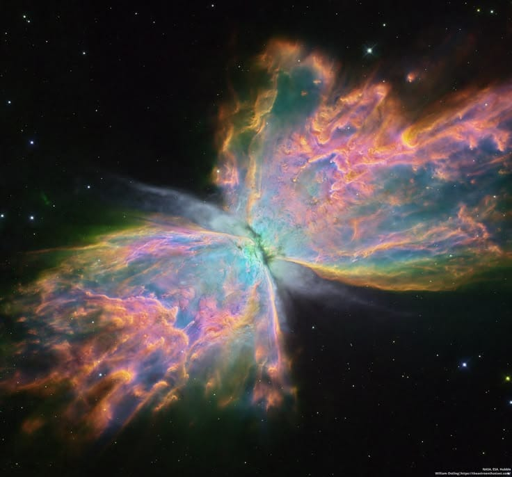
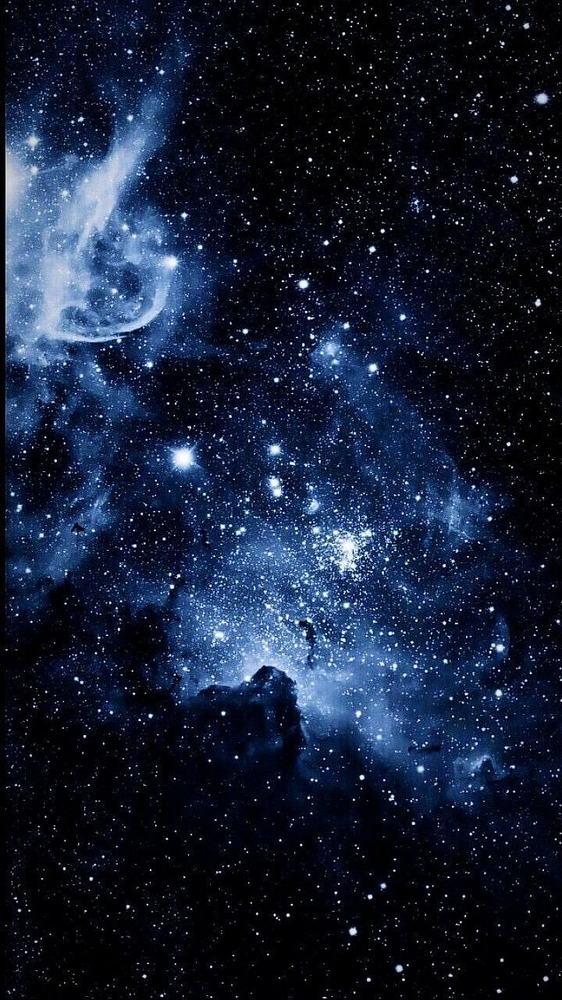

✨ Descubriendo el universo
El universo es un lugar inmenso que contiene estrellas, planetas, galaxias, nebulosas y muchos otros objetos celestes. Su estudio permite conocer cómo se formaron las estructuras del cosmos y cómo cambian con el tiempo. Aunque los científicos han descubierto muchas cosas, todavía existen numerosos misterios por resolver.

🌀 ¿Qué son las galaxias?
Las galaxias son enormes conjuntos de estrellas, gas, polvo y materia oscura unidos por la gravedad. Pueden contener millones o miles de millones de estrellas. Nuestro sistema solar se encuentra en la galaxia llamada Vía Láctea.
🌟 Tipos de galaxias
- Espirales: tienen un centro brillante y brazos curvos. La Vía Láctea es una galaxia espiral.
- Elípticas: poseen una forma ovalada y pueden contener muchas estrellas antiguas.
- Irregulares: no tienen una forma definida y pueden presentar estructuras variadas.
🌈 ¿Qué son las nebulosas?
Las nebulosas son enormes nubes de gas y polvo que se encuentran en el espacio. Algunas son lugares donde nacen nuevas estrellas, mientras que otras se forman cuando las estrellas expulsan material. Sus colores y formas las convierten en objetos fascinantes para la astronomía.
☁️ Tipos de nebulosas
- De emisión: brillan porque sus gases emiten luz después de recibir energía.
- De reflexión: reflejan la luz procedente de estrellas cercanas.
- Oscuras: son nubes densas de polvo que bloquean la luz de objetos que están detrás.
- Planetarias: se forman cuando ciertas estrellas expulsan sus capas externas al final de su vida.

🌠 Diferencias entre galaxias y nebulosas
Las galaxias son estructuras enormes que pueden contener miles de millones de estrellas y numerosas nebulosas. En cambio, las nebulosas son nubes de gas y polvo que forman parte de las galaxias. Ambas son importantes para comprender cómo evoluciona el universo.
🔭 ¿Cómo se estudian?
Los astrónomos utilizan telescopios terrestres y espaciales para observar las galaxias y las nebulosas. Algunos instrumentos captan luz visible, mientras que otros detectan radiación infrarroja, ondas de radio y otras formas de radiación. Con estas observaciones pueden conocer su composición, distancia y temperatura.
💫 Datos curiosos del cosmos
🌌 La Vía Láctea es nuestra galaxia.
⭐ Las estrellas pueden tener diferentes colores según su temperatura.
☁️ Algunas nebulosas son regiones donde se forman nuevas estrellas.
🔭 Los telescopios espaciales pueden observar objetos que son difíciles de estudiar desde la Tierra.
🚀 Observar objetos muy lejanos también nos permite estudiar cómo era el universo en el pasado, porque su luz tarda mucho tiempo en llegar hasta nosotros.
